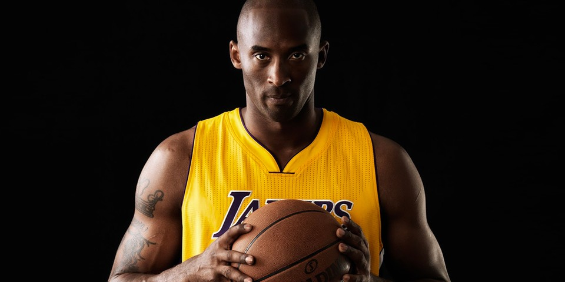

(Los Angeles Lakers)
EVERYTHING NEGATIVE- PRESSURE, CHALLENGES- ARE ALL AN OPPORTUNITY FOR ME TO RISE..
Kobe Bryant
Lebron James
Anthony Davis
Russel Westbrook
Los Angeles Lakers, American professional basketball team based in Los Angeles. The Lakers are one of the most successful and popular professional franchises in all American sports. The franchise has won a combined 17 Basketball Association of America (BAA) and National Basketball Association (NBA) titles, tied in league history with their rival the Boston Celtics.
The franchise that would become the Lakers was founded in 1946 as the Detroit Gems and played in the National Basketball League (NBL). The team moved to Minneapolis, Minnesota, in 1947, and its name was changed to the Lakers to reflect the Minnesota state nickname, “Land of 10,000 Lakes.” That same year the Lakers acquired George Mikan, who became professional basketball’s first dominant “big man” and the first in a series of great Laker centres. The Lakers joined the BAA (the official precursor of the NBA) for the 1948–49 season and won the final BAA championship. The NBA was formed in 1949, and Mikan and the Lakers—which also featured future Hall of Famers Jim Pollard, Slater Martin, Vern Mikkelsen, and (from 1953) Clyde Lovellette—won four of the first five league titles, establishing professional basketball’s first dynasty.
The Los Angeles Lakers have won a total of 17 rings and are tied with the Boston Celtics for the most championships won in the history of the NBA.
The most historic and successful franchise in NBA history, the Los Angeles Lakers have been the stalwarts of the modern basketball world. From Wilt Chamberlain and Jerry West to Kareem Abdul Jabbar and Magic Johnson to Shaq and Kobe to now having LeBron James and AD the history of the Purple and Gold has been littered with superstars, who have helped this franchise win a whopping 17 NBA Championships.
Apart from having some of the greatest players on their roster over the years, Los Angeles Lakers have also been blessed to have been associated with some of the best coaches in the game. Phil Jackson and Pat Riley, two of the greatest basketball minds of all-time have a massive footprint in the Lakers' success.
https://www.espn.ph/nba/team/roster/_/name/lal/los-angeles-lakers
https://www.britannica.com/topic/Los-Angeles-Lakers
https://www.sportskeeda.com/basketball/lakers-rings
| NAME | POS |
|---|---|
| Carmelo Anthony | PF |
| D.J. Augustin | G |
| Kent Bazemore | SF |
| Avery Bradley | PG |
| Troy Brown Jr. | SF |
| Thomas Bryant | C |
| Max Christie | G |
| Anthony Davis | PF |
| Wayne Ellington | SG |
| Talen Horton-Tucker | SG |
| Dwight Howard | C |
| LeBron James | SF |
| Stanley Johnson | PF |
| Damian Jones | C |
| Mason Jones | G |
| Kendrick Nunn | G |
| Scotty Pippen Jr | G |
| Austin Reaves | SG |
| Cole Swider | F |
| Juan Toscano-Anderson | SG |
| Lonnie Walker IV | G |
| Russell Westbrook | PG |